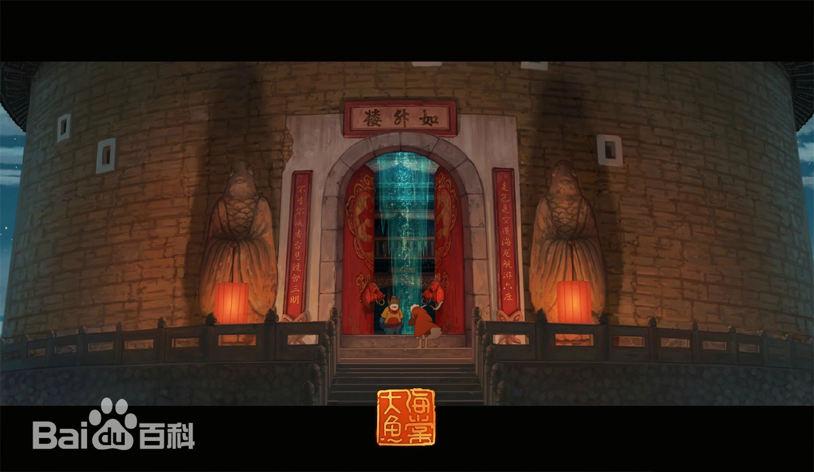
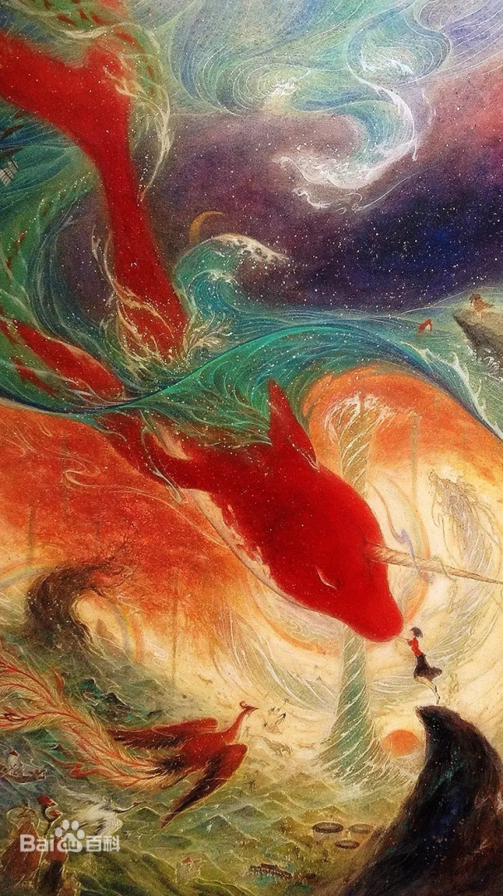

剧 / 情 / 简 / 介
在海底世界的“神之围楼”里居住着的一群“其他人”，他们是执掌着世间万物的神，每一个16岁的族人都要去往人间巡游，这个传统也被视为他们成人的仪式。“椿”（季冠霖 配）是一个能够控制植物生长的女孩
，在“椿”16岁的时候，她依照祖训穿过海底天空到人间。在人间的“椿”化身为一尾红色的鱼，暴风雨的夜里，“椿”不幸被渔网困住无法脱身，人类的男孩“鲲”（许魏洲
配）为了帮助“椿”逃脱困境，被海底旋涡卷走葬身大海。结束人间巡礼的“椿”回到海底世界的“神之围楼“，“椿”无法面对鲲为救自己而死。
